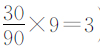

81 棒球与自责分率
数学概念：统计学
或许没有什么体育项目像棒球那样与数学有着如此密切的联系了。统计涉及棒球运动的方方面面，从安全打，到防守，再到投球，没有基本的数字知识，研究棒球者将寸步难行。可是，人们是怎样计算这些数字的呢？
以自责分率（ERA）为例，这项统计只适用于投手，是为了判断投手到底有多优秀。在早期的棒球中，没有后援投手，一开始就上场的投手必须打完整场比赛，所以，如果要判断一名投手连续击球的效率，或者至少确保他不会在上垒时击球，可以看看这名投手赢过多少场比赛。然而，后援投手出现后，比赛的结果开始不只取决于一名投手，所以，只看比赛成败并不能判断某个投手的技能。
自责分率恰恰解决了这个问题：这个数据以局数为统计对象，而非整场比赛。要计算自责分率，只用把投手失分的次数相加，除以他投球的局数（自责分是由投手而不是其他运动员的失误导致的），再乘以9（一场比赛共有9局）。例如，在90局比赛中，某名投手共失分30次，他的自责分率就是3．00（即

）。在整个棒球史上，关于自责分率好坏的标准不断变化，但总体上越低越好。20世纪初期，一名优秀投手的自责分率应该低于2，而如今，低于4的自责分率就已经相当不错了。
克莱顿·柯萧
2011—2014年的美国职业棒球大联盟中，洛杉矶道奇队的克莱顿·柯萧是所有先发投手中自责分率最低的一个，他在2014年的自责分率最低，只有1．77。相比之下，在棒球史上，特洛伊人队的蒂姆·基夫的自责分率是最低的，在1880年的赛季中只有0．86。